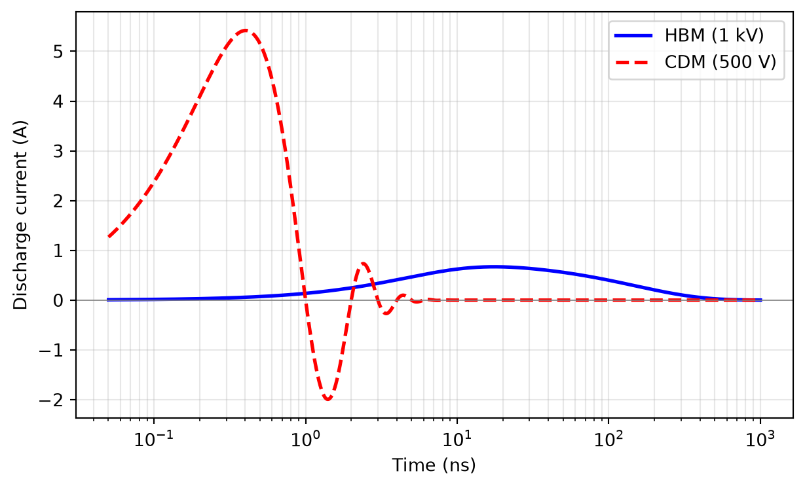

Electrostatic Discharge and Latch-Up
Design of Complex Integrated Circuits
ESD Models for Testing

Figure 80: Equivalent circuit of the standardized ESD test models: the model capacitance \(C\) is charged to the test voltage via a high-ohmic resistor; closing the switch discharges it into the DUT through the model resistance \(R\).
Snapback Devices: The ggNMOS

RC-Triggered Power Clamp

Figure 84: RC-triggered power-supply clamp: in normal operation, the capacitor is charged to \(V_\mathrm{DD}\), the inverter output is low, and the large clamp transistor \(M_\mathrm{ESD}\) is off.
ESD-Protected Areas

Latch-Up

Latch-Up Prevention